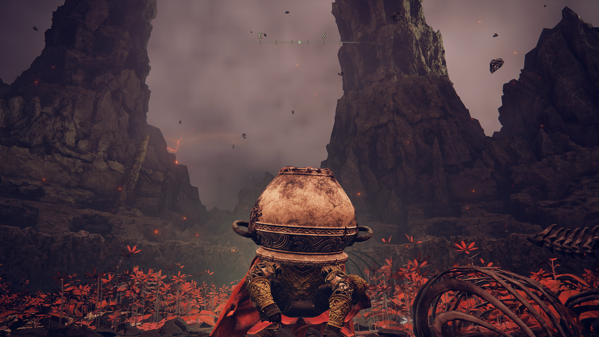
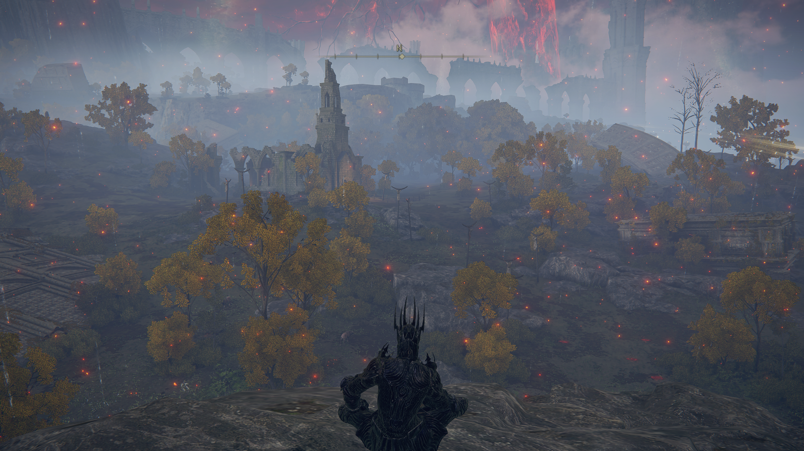
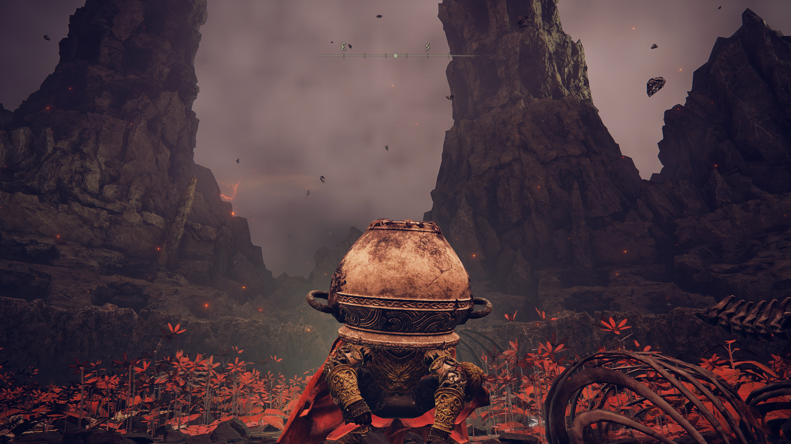
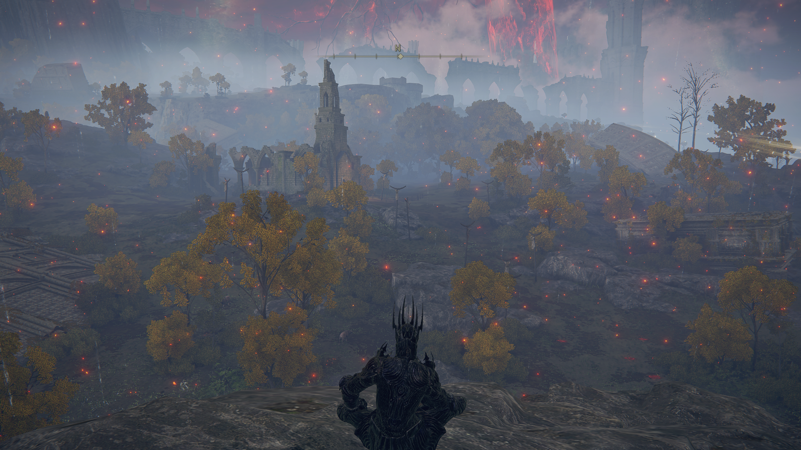

What Does "Souls-Borne" Even Mean?
The "Souls-like" name has been adopted by a number of critics and developers. However, there have also been questions whether it is a true genre or a collection of shared mechanics. A subset of these games, named Souls-Borne, refer to most of the Souls-like games developed by FromSoftware themselves such as game titles like the Dark Souls Trilogy, Bloodborne and most recently Elden Ring. Souls-Borne usually refers to games that are directly developed by FromSoftware where as Souls-like will refer to games that may have been inspired by the Souls-Borne games and features some shared mechanics similar to these games.
What Type Of Games Are They?
Souls-Borne games fall into the RPG, Action and Fantasy categories. These games will thrust you into a universe with an over arching story about the world your in with a grim dark atmosphere which sets a sinister tone. You'll discover new areas with their own lore and history aswell as other characters or NPC's with their own back story and motives. Your Character (You, the Player) will traverse this world and encounter challenging obstacles like different enemy types and bosses, or even the greatest enemy of all, Gravity. You'll have a variety of weaponry to choose, find, and utilise to help you in these endeavors such as Straight Swords, Spears, Halberds, Great Swords, Scythes, Sorceries, Holy Incantations, Crossbows, Bows, Great Bows, Shields, Maces, Great Hammers, theres a weapon type out there for you.
Is There An Easy Mode/Difficulty Slider?
HAHAHAHAHAHAHAHAHAHAHAHAHAHAHAHAHAHAHAHAHA Ahhhhhhhhhhhhhhhh There actually is, It's in the same place as where you'll be banging your head against the same wall for hours on end until you 'Git Gud' and overcome the challenge in front of you. These games thrive off the adrenaline you get from beating and overcoming that boss you've been fighting for the last 4 hours. The Souls-Borne games are known for for their difficulty and for not being able to change the difficulty to make things easier for yourself, but the magic of these games comes from that and it will test your patience.
Short Gallery of Weapons:
- Dagger
- ShortSword
- LongSword
- GreatSword
- Rapier
- Frozen Needle
- Uchigatana
- Rivers Of Blood
- Maliketh's Black Blade
- Sword Of Milos
.png)
 


